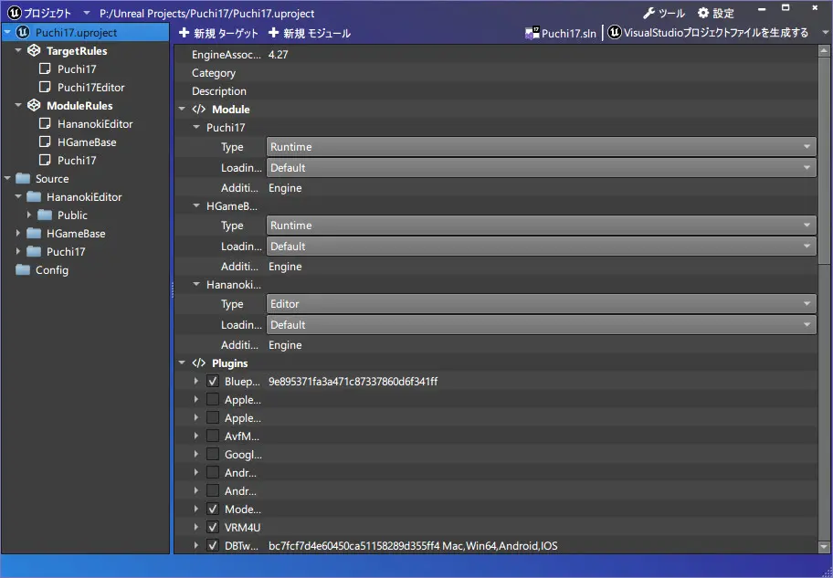

UECPPTool
UnrealC++の作業を幾分かラクにするツール

機能
VCプロジェクト生成機能ボタン
- uprojectの右クリック>Generateと同じ
ブループリントOnlyなプロジェクトをC++対応する際、必要なファイルをセットアップする機能
#includeを書き換える機能
- ファイル名を変更した時
- ファイルを移動した時
モジュール名を変更する機能
- フォルダ名を変更すると～APIやBuild.csなど書き換える
テンプレートを使用したC++クラス作成機能
コンテキストメニューで一発UTF8
- おかしな文字コードはファイルビューで表示
ターゲットに必要なモジュールをチェックボックスで設定する機能
モジュールコンパイルに必要な外部モジュールを設定する機能
モジュールをプリコンパイル済みヘッダ設定する機能
- ファイルも自動生成
プラグインのOn/Off状態を保存して使いまわせる機能
ゲームパッドでエディタ操作を
Killする機能PathColorを設定する機能
Materialsとか指定すればMaterialsという名前のフォルダは全てカラーが設定される- プロジェクト毎に設定を保存したり読み込む機能
不要ファイルを削除する機能
- ログとかクラッシュダンプとか溜まったファイルをポイ
変更履歴
[Rev.61] - 2023-03-20
Fixed
Build.csのCppStandardVersionの変更が機能していなかったのを修正
[Rev.60] - 2023-03-04
Added
- プロジェクト毎にフォルダの色設定を保存したり読み込む機能を追加
Changed
- プロジェクトの構成を複数の
qmakeに分割 Qtlib更新による諸々の変更の対応等
[Rev.49] - 2022-10-10
Added
UFUNCTION,UPROPERTYの編集機能の実装(表示されているものは一通り)ExpandEnumAsExecsとBlueprintPureが同時チェックされていた場合、確認するように実装- build.csの
CppStandardVersionオプションを変更する機能を実装
Changed
ModuleRulesのUIをTreeWidgetベースに変更した
[Rev.45] - 2022-10-07
Added
UFUNCTION,UPROPERTYの編集機能(一部のみ実装)- UFUNCTION
BlueprintCallableBlueprintPureBlueprintImplementableEventBlueprintNativeEventDisplayName - UPROPERTY
EditAnyWhereBlueprintReadOnlyBlueprintReadWriteDisplayName - ⚠
Category等対応していないものは上書きで消えます
- UFUNCTION
- ツール>ActiveClassRedirectsの削除ボタンの機能を実装
Changed
- テンプレートファイルの並びを自然にした
- 行数を表示してみた
- 検索のコンテキストメニューを追加（未実装）
Fixed
- Pluginsの×ボタンの位置を修正
[Rev.43] - 2022-10-02
[Rev.35] - 2022-09-22
ダウンロード
新しいバージョンにする場合、exeファイルの更新でOKです。